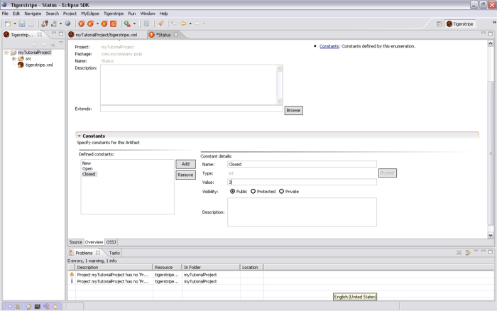

Adding Artifacts
Having successfully created a project, the next step is to add some artifacts.
In Tigerstripe Workbench, a Service Contract is modeled through a set of Model Artifacts stored in the project. A palette of service artifacts is available to you to model your Service Contract. The artifacts in a Tigerstripe model represent the information that is exchanged across the Service Contract. Because artifacts are abstracted away from the implementation details, the model is simplified compared to the details needed for the implementation.
There are two main categories of Model Artifacts:
- Information Model Artifacts. Allows you to capture details about the information model relevant to your Service Contract.
- Behavior Model Artifacts. Allows you to specify how information is made available through the Service Contract. This information can range from unsolicited notifications to query mechanisms.
Creating an Enumeration Artifact
Before creating the Entity artifact, you first must create the artifact types that will be referred to as attribute types. Consider a status attribute: This attribute will normally have a fixed set of values. For example, New, Open, or Closed, therefore it is ideally suited as an Enumeration Artifact.
To create an Enumeration Artifact
- Select your Tigerstripe project in the Tigerstripe Explorer
- Select Tigerstripe and click New to open the New Enumeration Wizard. Alternatively, you can select the Enumeration (
 )option on the toolbar. The New Enumeration Artifact dialog box appears.
)option on the toolbar. The New Enumeration Artifact dialog box appears.
- Enter a name for your Enumeration Artifact. For this example, name your artifact Status.
Note: The name should start with an uppercase letter.
- Click Finish and the Enumeration Artifact will be added to the Tigerstripe Explorer and an editor will open on the right-hand side of the perspective.
This editor is of the same basic layout as your project and all other artifacts. There are two important tabbed panes:
- Overview, which opens by default
- Details, which contains OSS/J Specific configuration parameters.
- Click the Details tab, there is a field named Base Type. This field should have a value of int. This indicates that all of the Enumeration values will be exchanged as integers.
- Click the Overview tab, and click the Constants link. The heading bar will display a new section where you can review and edit the allowed values for this enumeration.
- Click Add to add a new field. A new field named aLabel0 is automatically created. You can edit the various fields. Set the name as New and set the value to 1.
- Repeat the previous step to add other values to represent the Open and Closed artifacts. Make sure to use a different integer value for each enumeration.
- Click Save to save your changes.
At this point you can close the editor, however, you can re-open it at any time by double-clicking on the relevant icon in the Tigerstripe Explorer.

Creating a Datatype Artifact
In addition to Enumerations you can create Datatype Artifacts to represent common types of data. In this example, it is reasonable to assume that customer details will have a reusable set of attributes such as Name, Address, and Phone Number.
To create a Datatype Artifact:
- Opening the New Datatype Artifact using the Datatype () option on the toolbar.
- Name your Datatype Artifact customerDetails.
- Add an Attribute by clicking the Attributes link. Navigate to the Attributes area of the editor and name this Attribute, name. Create this attribute as a string.
- Add another Attribute named address. Create this attribute as a string.
- Add another Attribute named phoneNumber. Create this attribute as a string.
- Click Save to save your changes.

The Managed Entity
The final part of this simple model is the creation of a Managed Entity. This Entity is what the Service Contract is all about.
Create an Entity artifact in the same way as you did for the Enumeration Artifact and the Datatype Artifact. To create a Managed Entity select the Managed Entity ( ) option on the toolbar. Name the entity CustomerTrouble.
) option on the toolbar. Name the entity CustomerTrouble.
The editor for an Entity Artifact is very similar to that of the Datatype Artifact. Open the section related to Attributes, and add an attribute and name the attribute customer. This time, click Browse to select the attribute type. The Attribute Class Selection dialog box opens that shows a list of entries that match the string in the Select a Classname text box.
In that Select a Classname text box, replace the default value with the name of the Datatype Artifact that you previously created ("CustomerDetails"). As you type, the list should filter down until you can see what you need. Select the correct entry from the list (make sure that it is the only one within your project), and click OK. You now have an attribute whose type you have previously defined. In the same manner, add a new attribute named status. Browse the artifact types and select the Enumeration Artifact that you previously created.
You can continue to add attributes of your user-defined types, or of any standard Java type, until your model is complete.
Related Topics
Tutorial Overview
Creating a New Project
Generating the API
Common Procedures
 Once the model is complete, the final step is to Generate the API specification
Once the model is complete, the final step is to Generate the API specification
.
© copyright 2005, 2006, 2007 Cisco Systems, Inc. - All rights reserved